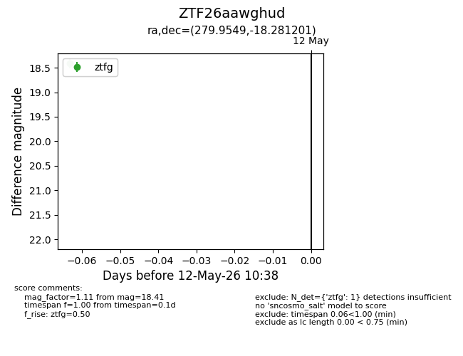
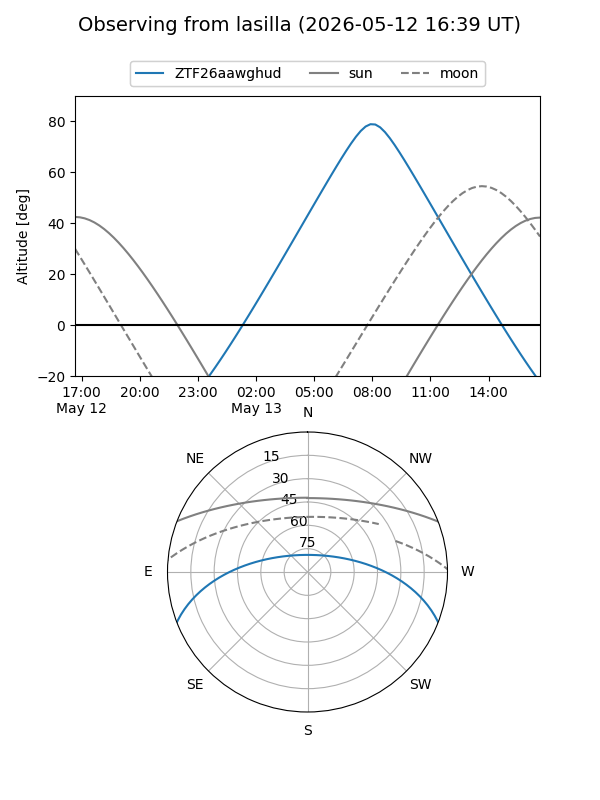
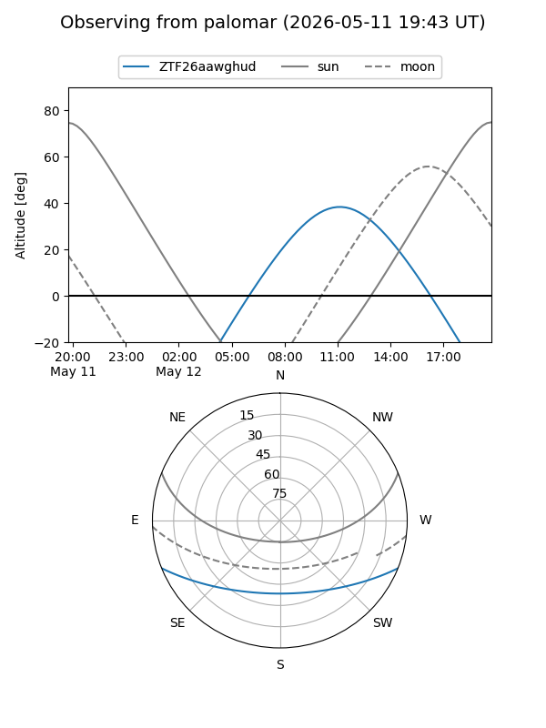

ZTF26aawghud
Target ZTF26aawghud at 2026-05-12 10:40
Aliases and brokers:
FINK: link
Lasair: link
ALeRCE: link
alt names
ZTF26aawghud (ztf,fink_ztf)
Coordinates:
equatorial (ra, dec) = 279.9549,-18.28120
equatorial (HMS+DMS) = 18:39:49.18,-18:16:52.32
galactic (l, b) = (15.3160,-5.75138)
Flags:
Photometry:
last ztfg=18.41
1 ztfg detections
Lightcurve

Visibility


Additional plots